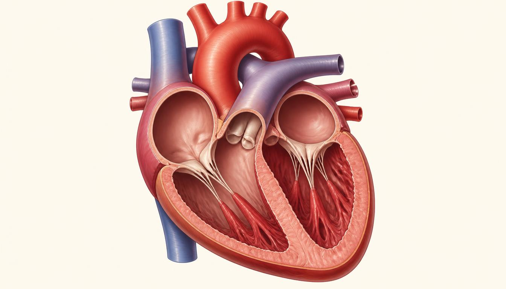

Conheça o motor
da sua vida
O coração é um órgão muscular oco que trabalha sem descanso
para bombear sangue por todo o corpo. Descubra como suas
câmaras, válvulas e vasos funcionam juntos para manter cada célula
viva.

Explorar estruturas Ver como funciona